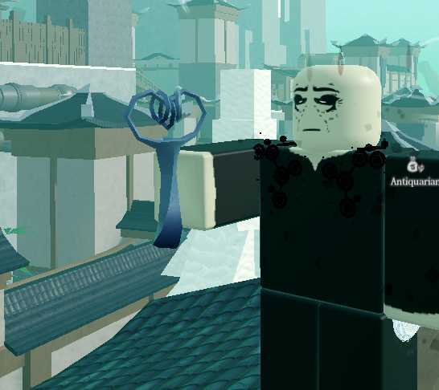

"The Idol of Yun'shul is a ritual idol and Relic connected
to the Drowned God Yun'Shul, that allows its user to redeem one wish from
anywhere and without the need of a Resonance. (one-time use,
re-obtainable) Note: Using the Idol of Yun'Shul to escape The Depths can
only be done once per character." You will only get 3 kinds of wishes,
Escape the Depths,Re-roll your Bell, and to remove the flaw you started
with.
Type=treasure, Rarity=Relic, Selling price=200, Bankable=1 Knowledge.
